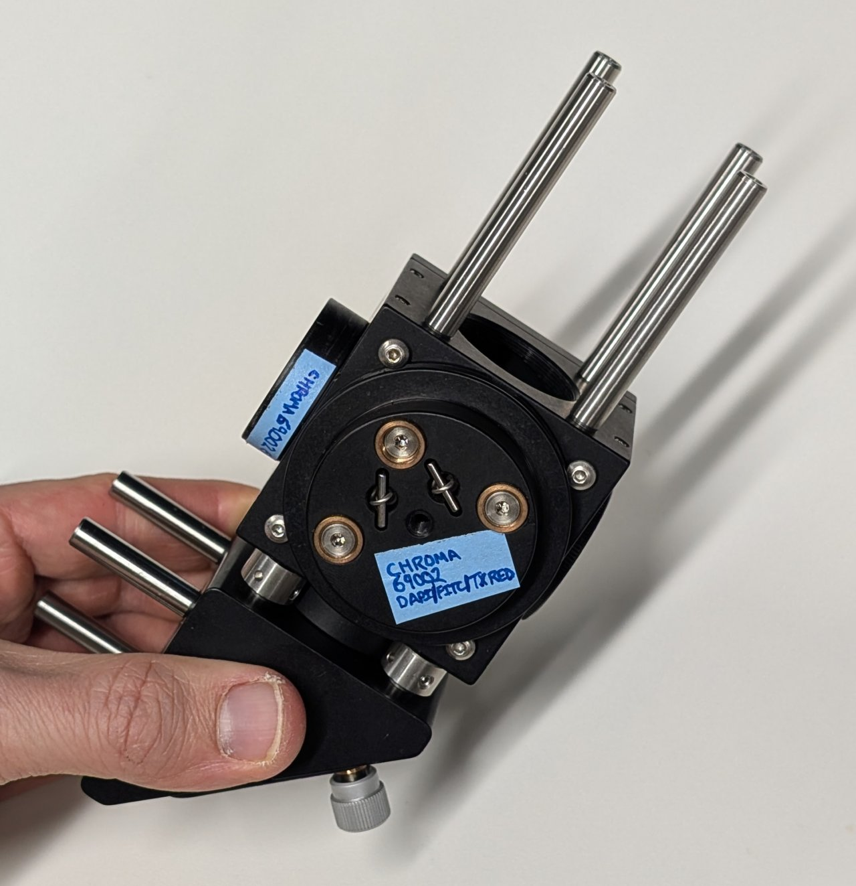
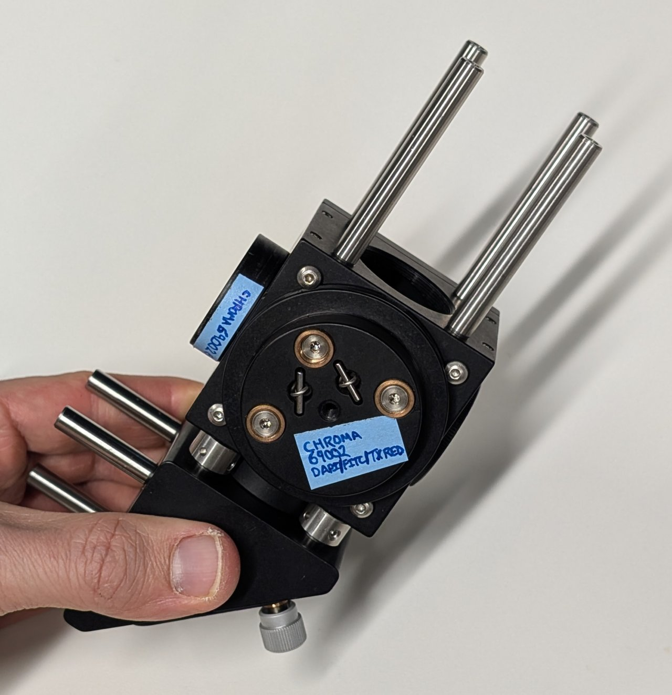
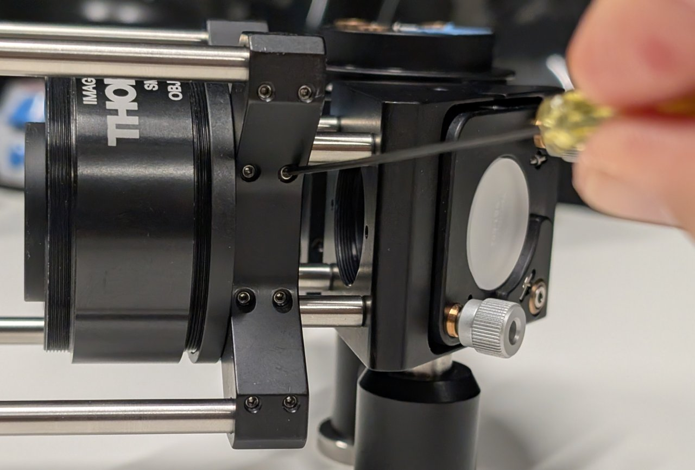
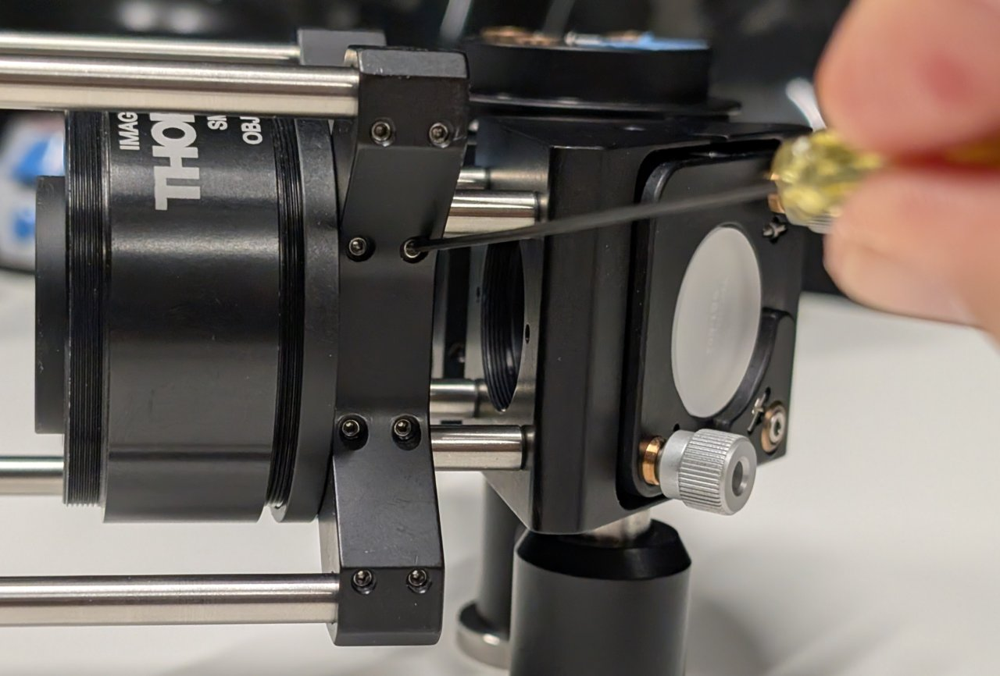
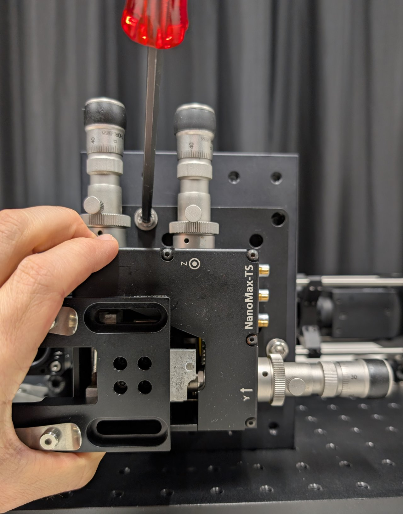
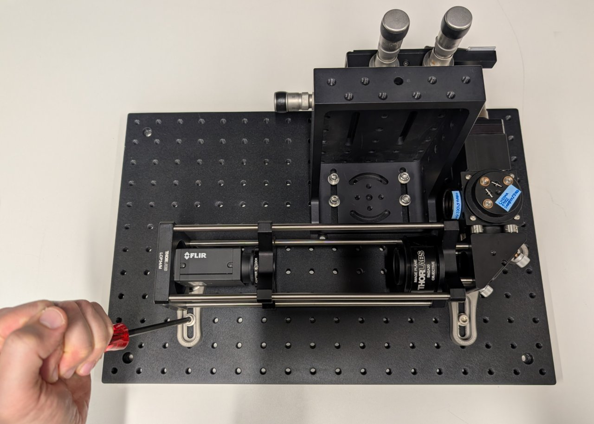

Construct the Microscope Emission Path
Parts List
Below is the parts list for this section of the basic training course. Note that some of the parts used in the course are now obsolete. In these cases the parts listed below are the closest current match to the obsolete parts.
| Part | Manf. Part No. | Quantity | URL |
|---|---|---|---|
| Chroma 69002 ET - DAPI/FITC/Texas Red® Filter Set | 69002 | 1 | https://www.chroma.com/products/sets/69002-et-dapi-fitc-texas-red |
| Nikon CFI Plan Achro DL40x Microscope Objective | MRL20402 | 1 | https://www.microscope.healthcare.nikon.com/products/optics/selector/comparison/-1703 |
| 3-Axis NanoMax Stage, Differential Drives, Closed-Loop Piezos, Metric | MAX311D/M | 1 | https://www.thorlabs.com/thorproduct.cfm?partnumber=MAX311D/M |
| Microscopy Slide Holder | MAX3SLH | 1 | https://www.thorlabs.com/thorproduct.cfm?partnumber=MAX3SLH |
| Ø1" Broadband Dielectric Mirror, 400 - 750 nm | BB1-E02 | 1 | https://www.thorlabs.com/thorproduct.cfm?partnumber=BB1-E02 |
| Right-Angle Kinematic Mirror Mount with Tapped Cage Rod Holes, 30 mm Cage System and SM1 Compatible, M4 and M6 Mounting Holes | KCB1/M | 1 | https://www.thorlabs.com/thorproduct.cfm?partnumber=KCB1/M |
| 30 mm Cage Cube, Ø6 mm Through Holes | C6WR | 1 | https://www.thorlabs.com/thorproduct.cfm?partnumber=C6WR |
| 30-mm-Cage-Compatible Rectangular Filter Mount | FFM1 | 1 | https://www.thorlabs.com/thorproduct.cfm?partnumber=FFM1 |
| Kinematic Cage Cube Platform for C4W/C6WR, Metric | B4C/M | 1 | https://www.thorlabs.com/thorproduct.cfm?partnumber=B4C/M |
| Coarse ±1 mm XY Slip Plate Positioner, 30 mm Cage Compatible, Metric | SPT1C/M | 1 | https://www.thorlabs.com/thorproduct.cfm?partnumber=SPT1C/M |
| Externally SM1-Threaded End Cap | SM1CP2 | 1 | https://www.thorlabs.com/thorproduct.cfm?partnumber=SM1CP2 |
| Rod Adapter for Ø6 mm ER Rods, L = 0.27" | ERSCB | 4 | https://www.thorlabs.com/thorproduct.cfm?partnumber=ERSCB |
| Cage Assembly Rod, 1/4" Long, Ø6 mm | ER025 | 4 | https://www.thorlabs.com/thorproduct.cfm?partnumber=ER025 |
| Cage Assembly Rod, 1" Long, Ø6 mm | ER1 | 4 | https://www.thorlabs.com/thorproduct.cfm?partnumber=ER1 |
| Cage Assembly Rod, 2" Long, Ø6 mm | ER2 | 4 | https://www.thorlabs.com/thorproduct.cfm?partnumber=ER2 |
| Ø12.7 mm Optical Post, SS, M4 Setscrew, M6 Tap, L = 20 mm | TR20/M | 1 | https://www.thorlabs.com/thorproduct.cfm?partnumber=TR20/M |
| Ø12.7 mm Optical Post, SS, M4 Setscrew, M6 Tap, L = 30 mm | TR30/M | 2 | https://www.thorlabs.com/thorproduct.cfm?partnumber=TR30/M |
| Ø12.7 mm Post Holder, Spring-Loaded Hex-Locking Thumbscrew, L=20 mm | PH20/M | 1 | https://www.thorlabs.com/thorproduct.cfm?partnumber=PH20/M |
| Ø12.7 mm Post Holder, Spring-Loaded Hex-Locking Thumbscrew, L=30 mm | PH30/M | 1 | https://www.thorlabs.com/thorproduct.cfm?partnumber=PH30/M |
| Clamping Fork for Ø1.25" Pedestal Bases, 44.4 mm Counterbored Slot, M6 x 1.0 Captive Screw | CF175C/M | 3 | https://www.thorlabs.com/thorproduct.cfm?partnumber=CF175C/M |
| Ø31.8 mm Studded Pedestal Base Adapter, M6 Threads | BE1/M | 3 | https://www.thorlabs.com/thorproduct.cfm?partnumber=BE1/M |
| Adapter with External SM1 Threads and Internal M25 x 0.75 Threads | SM1A12 | 1 | https://www.thorlabs.com/thorproduct.cfm?partnumber=SM1A12 |
| 30 mm Cage System Cover, 24" Long, Pack of 4 | C30L24 | 1 | https://www.thorlabs.com/thorproduct.cfm?partnumber=C30L24 |
| SM1 Lens Tube, 0.30" Thread Depth, One Retaining Ring Included | SM1L03 | 2 | https://www.thorlabs.com/thorproduct.cfm?partnumber=SM1L03 |
| Aluminum Breadboard, 300 mm x 450 mm x 12.7 mm, M6 Taps | MB3045/M | 1 | https://www.thorlabs.com/thorproduct.cfm?partnumber=MB3045/M |
| Large Right-Angle Bracket, M6 Holes | AP90RL/M | 1 | https://www.thorlabs.com/thorproduct.cfm?partnumber=AP90RL/M |
| M6 x 1.0 Stainless Steel Cap Screw, 16 mm Long, 25 Pack | SH6MS16 | 6* | https://www.thorlabs.com/thorproduct.cfm?partnumber=SH6MS16 |
| 1/4" Washer, M6 Compatible, Stainless Steel, 100 Pack | W25S050 | 6* | https://www.thorlabs.com/thorproduct.cfm?partnumber=W25S050 |
- Only a small quantity from larger pack is required.


Not shown: 3-Axis NanoMax Stage and Microscopy Slide Holder
Instructions
0
Find the side of the right-angle mirror mount with a dot on it. Take this side to be the bottom.

1
Attach 4, 0.25" cage rods to the right-angle mirror mount as shown.
Attach 4, 1" cage rods to the other side.


2
Attach 4 cage rod adapters to the exterior of the 30 mm cage cube as shown.
Screw the lens tube containing the emission filter into the SM1 threaded hole on the same side as the cage rod adapters.


3
Attach the cage cube to the right-angle mirror mount using the 0.25" cage rods and cage rod adapters. Remember to keep the side of the right-angle mirror mount with the dot facing down.

4
Note the arrow on the side of the dichroic mirror. This arrow points to the side with the dielectric coating and should face towards the sample.
Insert the filter and its kinematic platform into the cage cube.


5
Rotate the platform by approximately 45 degrees, ensuring that the side of the dichroic mirror with the coating faces away from the mirror.
Tighten the screws on the cage cube. (They are imperial in the image shown!)

###6
Screw the lens tube containing the excitation filter into the cage cube.


7
Screw the SM1-threaded end cap into the hole on the cage cube that is opposite the excitation filter.

8
Attach 4, 2" long cage rods to the top of the cage cube.
 

9
Slide the slip plate onto the ends of the cage rods. Lock it into place with the set screws.

10
Attach the cage system covers to the four sides of the 2" cage rod subassembly.

11
Insert the SM1 to M25 thread adapter into the slip plate.

12
Thread pedestals into the bottoms of the two 30 mm long post holders.


13
Note that one set screw is shorter than the other in the two, 30 mm long posts.
Attach the one with the shorter set screw to the bottom of the cage cube. Attach the other to the bottom of the right-angle mirror mount.
Use a hex driver and the post hole to lightly tighten the posts.


14
Attach the post holders to the posts.
Make sure that they are at the same height by placing the assembly on a flat surface and checking for any tilt.


15
Attach the 20 mm long post to the bottom of the cage plate of the camera and tube lens assembly.
Not shown: Slide on a 20 mm long post holder with a pedestal attached.

16
Slide the 30 mm to 60 mm cage adapter from the tube lens/camera assembly onto the 30 mm cage rods of the right-angle mirror.
Tighten the set screws to join the two assemblies together.
 

17
Let \( ( \text{row} \, , \text{col} ) \) denote the row and column coordinates of a screw hole on the base plate. Take the upper left hole of the base plate as the origin (0, 0), with the row coordinate increasing downward and the column coordinate increasing to the right. Do not take the counterbored holes into consideration.
Place the screws for the three clamping forks at the coordinates
| row | col |
|---|---|
| 9 | 3 |
| 6 | 16 |
| 9 | 14 |

18
Slide the pedestals into the clamping forks. Do not tighten them yet.

19
Attach the large right-angle bracket to the base plate as shown using the following screw holes:
| row | col |
|---|---|
| 3 | 9 |
| 4 | 9 |
| 3 | 12 |
| 4 | 12 |


20
Attach the sample positioner to the top of the right-angle bracket.

21
Carefully screw the objective into the SM1 to M25 thread adapter.

22
Place a slide with an easy-to-see sample, such as a blood smear, onto the sample holder. Check its position relative to the objective.


23
Gently and carefully move the entire microscope assembly to position the sample approximately 1 or 2 mm from the end of the objective.
Make sure that the holes for the cage rods on the cage cube are not blocked by the right-angle bracket.


24
Put a smartphone with a flashlight in front of the sample. Connect the camera to the PC and start a live acquisition.
Further adjust the microscope assembly until the image is in focus.
It is OK if the image contrast and quality is poor at this point. Just try to make it in focus.
Not shown: Adjust the screws on the right-angle mirror mount if the image is not centered on the camera.


25
Tighten all screws to secure the assembly to the base plate.
